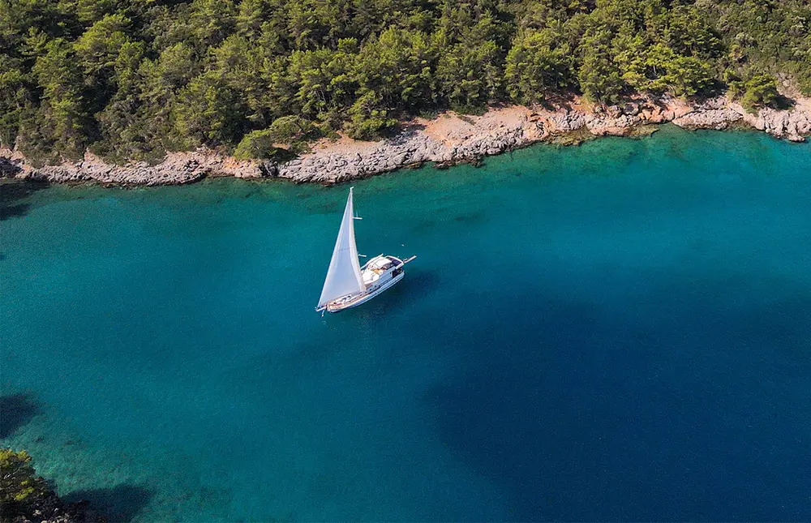

Golf von Gökova
Hier beherrscht das tiefgründige Blau. Hier bewegen sich die Berge in Richtung vom Meer. Man soll eher hier sein Leben führen nicht woanders. Küstenlinie, jadegrüne Wiese, Fische mit mythologischen Gesichten, die frische Luft; Nizza, Dalmatien, Monte-Carlo dürfen hier uns nichts anhaben. Die smaragdgrüne Küste wird mit Amberbäume und Kieferbäume umgeben, auf diese Küste sind viele Zivilisationen neidisch. Der berühmte Autor Fischer von Halikarnas sagt: Man sollte nicht sterben bevor man Rom besucht, man sollte eher leben nachdem man in Gökova ankommt. Eine Naturerbe von tausenden Jahren, man kann die Blaue-Seefahrt von Gökova nicht ausschließen. Der Fischer wird Sie hier willkommen heißen. Hier ist die Farbe der Reise bestimmt Blau. Käse, Wasser, Schiffszwieback, Tabak und Rakı. Während der Blauen-Seefahrt soll man sich am besten weit weg von der Stadt ausruhen. Hier geht es um Cevat Şakir, Bedri Rahmi, Sebahattin Eyüboğlu und Azra Erhat. Idyma heißt die Schwester von Arschipel, ein blaues Gebrüll und klare Ewigkeit. Hier ist immer Blau geblieben seit der Zeit von Dionysos. Zusammen mit weisem Schaum erbeht sich Gökova auf die Schultern vom Ägäis und Mittelmeer. Es ist unsere Pflicht diese Naturerbe zu schützen.
Gulet Bernis
Haupteigenschaften
- 6 Passagiere-Kapazität
- 1 Master 2 Doppelte Kabine
- 3 Schlafzimmer
- Einzelne Küche und Bad für jede Zimmer
- Vollständige Küche
- Klimaanlage in jeder Kabine
- Webasto Heizer in jeder Kabine
- Unbegrenztes Internet
- Seabob Unterwasser Scooter
- Ringo und Radschaufel
- Deluxe Gulet wurde 2022 gebauet
- 18 Meter Länge
- 5.45 metre Breite
- Öffentlicher und privater Essensraum
- Öffentlicher und privater Raum zum Ausruhen
- Eigener Lebensraum für die Besatzung
- 2x27kW Stromerzeuger
- Versicherung zum Boot und Passagiere
- Dienstboot
- Wassermacher
Technische Eigenschaften
- Art vom Schiff: Gulet
- Modell: 2022
- Länge: 18 Meter
- Breite: 5.45 Meter
- Hauptmaschine: 1x300 PS Volvopenta
- 100m2 Cenoa Segel
- Personal: 3 Personen-Besatzung
- Jachthafen: Akyaka / Türkei
- Stromerzeuger: 27kWa Aksa Onan
- Watermaker: 350 Liter pro Stunde
Unterhaltung
- Unbegrenztes WiFi
- Kabelfernsehen in jeder Kabine
- Am Obergeschoss gibt es Platz für Beamer und Kino
- Das Audio-Musik System
- Kart und Brettspiele
- Eismaschine
- Backgammon und Okeyspielbretter
- Wassersport
- Radschaufel
- Seabob Unterwasser Scooter
- Ringo
Unterkunft
- 1 Master, 2 Einzel Kabine
- Smart-Bett Technologie
- Kissen-Menü
- Kleiderschrank
- Jede Kabine hat einzelne Klimaanlage
- In der Kabine und im Wohnzimmer gibt es Webasto Marine Heizer
- Nachtlampe neben dem Bett
- Das Bad und Waschbecken in Ihrer Kabine werden jeden Tag geputzt
- In Ihrer Kabine erhalten Sie Strandtücher
- Schutz gegen Mücken an den Fenstern
- Waschmachine mit völligem Trockner
- Privates Schließfach in der Kabine
- Föhnmaschine & Haartrockner in jeder Kabine
Küche
- Stromherd
- Eingebaute Oven (2 Stücke)
- Toaster
- Absaugventilator
- Spülmaschine
- Kühlschrank
- Filter Kaffee Maschine
- Tee Maschine
- Türkischer Kaffee Maschine
- Smoothie Maschine
- Eiswürfelbreiter
- Flaschenkühler
- Kaltlagerung
- Fritteuse
Ausstattung an Deck
- Sonnenkissen
- Schattenschutz am hinten, vorne und Obergeschoss
- Raum zum Essen und Ausruhen auf der Hinterseite
- Segeln unter geeigneten Wetterbedingungen
- Schwimmtrittleiter und Dusche
- Regensystem für die Sitzung auf der Hinterseite
- Unterwasserbeleuchtung
Sicherheit
- Feuerlöscheinrichtung
- Schwimmwesten
- Rettungsfloß
- Oberfläche-Radar für Nachtfahrt
- Geräte für Schifffahrtskunde
- Kompass und Fernglas
- Mobiles Sprechfunkgerät
- Vollständige Erste-Hilfe-Ausrüstung
- Passagiere und Bootsversicherung im Wert von 550.000 €
- Fiskalische Verantwortung Versicherung für die 3. Partei
- TAPDK Alkohol Zulassung
- Tourismus und Betriebsgenehmigung
Im Preis inbegriffen
Schiffsmiete (abgemachte Tage), Gebühre für Jachthafen in den türkischen Hoheitsgewässer außerhalb der privaten Jachthafen, Gebühr für Ein- und Austreten in den türkischen Hoheitsgewässer, Klimaanlage, Wasser in der Kabine, Schiffsversicherung und Treibstoff.
Seabob, Paddleboard, Tisch- und Kartenspiele
Im Preis nicht inbegriffen
Mehrwertsteuer, Essen, nicht/alkoholische Getränke, Flughafentransfer, Exkursion, private Jachthafensteuer, Gebühr für Festmachen und Ein- und Austreten Formvorschriften. Die Versicherung schließt persönliche Reisenversicherung und Annulierung nicht ein. Ringo und Schnellboot.
Ringo und Schnellboot.
Mietdauer / Ein- und Ausstiegszeiten
Sie können das Boot (Gulet) vom Samstag bis Freitag Abend mieten, es darf wenigstens 1 Woche sein. Wenn Sie eine kürzere oder längere Frist für die Bootfahrt brauchen oder am verschiedenen Tag ein- oder aussteigen müssen, können wir Ihnen geeignetes Datum Ihrem Wunsch entsprechend vorschlagen. Einsteigen Zeit an Board ist um 10.00 Uhr für jede Schifffahrt. Aussteigen Zeit ist um 18.00 Uhr an Ihrem letzten Tag. Wenn Sie akzeptieren, den Preisdifferenz zu bezahlen, können Sie an Bord bei anderem Jachthafen einsteigen. Der Preisdifferenz ist von der Strecke zwischen erstem und letztem Jachthafen abhängig.
Unsere Stornobedingungen
- Stornierung 90 Tage oder früher vor Reisebeginn: 25 % des Gesamtpreises
- Stornierung 89–60 Tage vor Reisebeginn: 40 % des Gesamtpreises
- Stornierung 59–40 Tage vor Reisebeginn: 60 % des Gesamtpreises
- Stornierung 39–0 Tage vor Reisebeginn: 100 % des Gesamtpreises
werden als Stornogebühr berechnet.
WARUM BERNIS?
Bei uns wird Ihre Bequemlichkeit groß geschrieben
- Speisekarte mit Qualität
- Gemütliche Unterkunft
- Küsten mit Blauer Flagge
- Berufserfahrene Besatzung